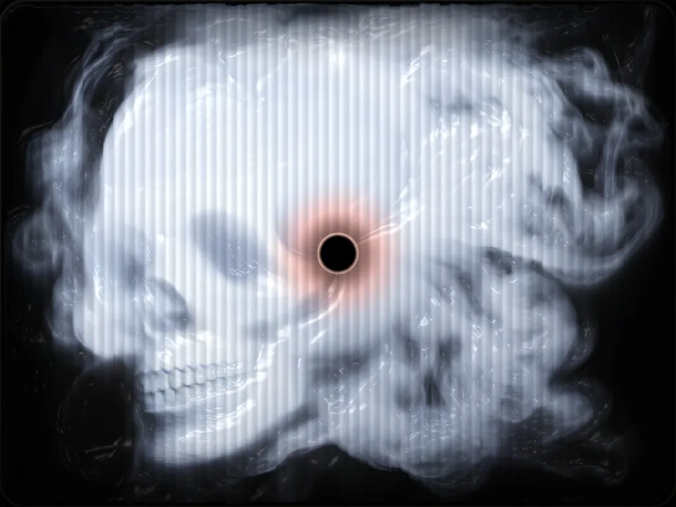

it’s a sink.


Bowed over a sink, a figure brings up something gold: treasure, or vomit. Her print hangs as a mirror, so your face lands on hers. In the bowl, water is a machine dreaming live, every dream leaning toward eight pictures chosen by hand. Turn the handle, and the water stops: no water, no dream. Reach in, and it slips through your fingers. Elsewhere, AI drinks real water: training GPT-3 could evaporate 700,000 litres of fresh water to cool it. Here the water is one small computer, and a handle turns it off.
Dutch still lifes of the 1600s painted skulls, cut flowers and soap bubbles: homo bulla, man is a bubble. Here the bubble is AI, twice over. Together the swapped letters, an and er, spell anēr, Greek for man: a mortal. Asked to judge, Pontius Pilate washed his hands and asked, “what is truth?”: quid est veritas. This sink asks you to reach anyway.
Hold the eye on the glass, and a camera lends your face to the next dream, once. Nothing is kept.

Allegory of Vanity, c.1636, KHM Vienna

Allegory of the Vanities…, c.1640, Nat. Gallery

Vanitas with a Sunflower, 1668, Rijksmuseum

Vanitas Still Life (detail), 1630, Mauritshuis

Vanitas Still Life, contemporary

Vanitas Still Life, dated 1650
In the 1600s the Dutch Republic had just gotten rich, fast: global trade, a new merchant class, tulip futures, more imported luxury than anyone knew what to do with, and a rigid Calvinism that held your possessions cannot save you. Vanitas is that contradiction in paint.
Picture a patron: he commissions his shells, gold and books, has them rendered gorgeously, then hangs a skull over the pile so the indulgence reads as a sermon. Have the luxury, moralise the luxury.
Slop is our tulip mania: infinite cheap abundance, generated faster than anyone can value it. Vanitas told the 17th century its wealth was hollow while cashing the cheque; this piece says it to the feed.
Its screen boots straight into the water; a power cut is just the tap turned off. On the web, the same water runs as veritas, and a touch in either is a ghost touch in the other. On the sink, a QR code opens it: sink == sync: one water.
how the water is made
Antonio de Pereda, c.1636
Harmen Steenwijck, c.1640
Maria van Oosterwijck, 1668
Pieter Claesz, 1630
Carlo Russo, contemporary
Dutch School, 1650
vanitas [flower, skull, soap bubble] --chaos 100 --ar 4:3 --sref https://s.mj.run/wu5Pv45blp4 --profile f5vl77o --stylize 1000 --hd --v 8.1


